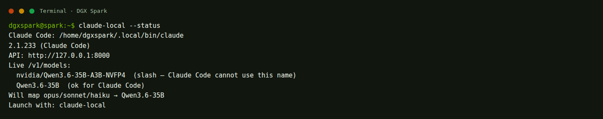
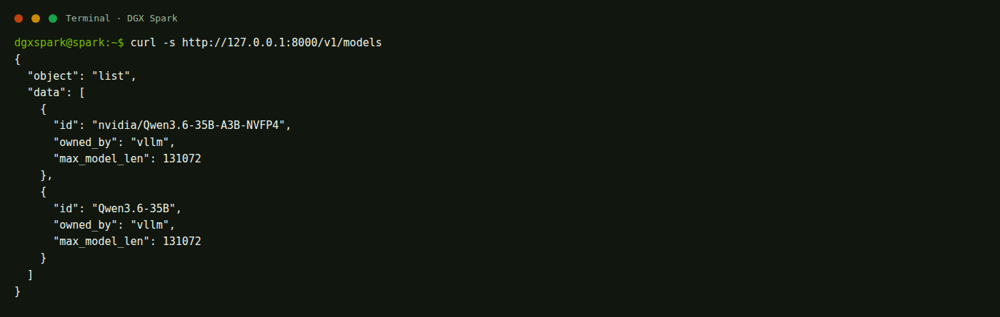

Open WebUI :18473
หน้าเว็บคุยทั่วไป เลือกโมเดลจากรายการด้านบน ไม่แก้ไฟล์ในโปรเจกต์ให้
Claude Code คือโปรแกรมในเทอร์มินัล ไม่ใช่หน้าเว็บแชท และไม่ใช่ Hermes คำสั่ง claude-local ชี้ไปที่ vLLM บนเครื่องนี้ อ่านชื่อโมเดลจาก API จริง จึงสลับโมเดลในอนาคตได้โดยไม่ต้องแก้ไฟล์คอนฟิกของ Claude
หน้าเว็บคุยทั่วไป เลือกโมเดลจากรายการด้านบน ไม่แก้ไฟล์ในโปรเจกต์ให้
เอเจนต์ในกรง sandbox มีแดชบอร์ด Chat / Cron / Skills คนละโปรเซสกับ Claude Code
อ่านโค้ดในโฟลเดอร์ที่เปิดอยู่ แก้ไฟล์ รันคำสั่ง ใช้โมเดลก้อนเดียวกับแชทผ่านพอร์ต 8000
claude เปล่า ๆยังคุยกับ Anthropic ตามปกติ ไม่ถูกชี้เข้าเครื่องนี้ เพื่อไม่ให้ทุกเซสชันเผลอใช้โมเดล local
claude-localตรวจจากไฟล์และคำสั่งจริง วันที่ 18 สิงหาคม 2026
~/.local/bin/claude เวอร์ชัน 2.1.233vllm/vllm-openai:latest คือ 0.27.1 มี Anthropic Messages API ที่ /v1/messages รองรับ role ที่ Claude Code รุ่นใหม่ส่งมาแล้ว (แก้ใน vLLM 0.23.0)claude-local ไฟล์จริง /home/dgxspark/ai/open-webui/claude-local ลิงก์ที่ ~/.local/bin/claude-localstart-claude ได้เหมือนกัน เป็นลิงก์ไปไฟล์เดียวกันqwen35 qwen27 nemotron เปิดได้ทีละตัวบนพอร์ต 8000/ ดังนั้น wrapper จะเลือกชื่อสั้น เช่น Qwen3.6-35B ไม่ใช้ nvidia/Qwen3.6-35B-A3B-NVFP4
claude-local --help จริง แสดงโมเดลในสตูดิโอและวิธีเพิ่มตัวใหม่Claude Code พูดภาษา Anthropic Messages API ไม่ใช่ภาษา OpenAI ที่ Open WebUI ใช้ vLLM บนเครื่องนี้พูดได้ทั้งสองภาษาที่พอร์ตเดียวกัน
ค่าเริ่มต้นคือเซิร์ฟเวอร์ของ Anthropic ถ้าไม่เปลี่ยน claude จะออกเน็ต
คำขอไปที่ vLLM ในเครื่อง คีย์ใส่ dummy ได้เพราะ vLLM ไม่ตรวจจริง
ต้อง remap ทั้งสามชื่อไปที่ชื่อที่ API ประกาศจริง ไม่เช่นนั้นจะได้ 404
สลับโมเดลแล้วไม่ต้องไปแก้ ~/.claude/settings.json
ANTHROPIC_BASE_URL ลงใน ~/.claude/settings.json ของทั้งเครื่อง ค่านี้จะทำให้คำสั่ง claude ธรรมดาชี้เข้า local ทั้งหมด แล้วเลิกคุยกับ Anthropic ได้โดยไม่ตั้งใจClaude Code ไม่ได้โหลดโมเดลเอง มันยิงไปพอร์ต 8000 เหมือน Open WebUI และ Hermes เปิดได้ทีละตัว
| งาน | คำสั่งเปิด | ชื่อที่ Claude Code จะใช้ |
|---|---|---|
| เขียนโค้ด / เรียกเครื่องมือ แนะนำตัวนี้ | start-qwen35 | Qwen3.6-35B |
| แชทโค้ดทั่วไป กิน RAM สูงกว่า | start-qwen27 | Qwen3.6-27B |
| งานยาว มี speculative decoding | start-nemotron | Nemotron-3.5-Lightning |
ทั้งสามสูตรเปิด --enable-auto-tool-choice อยู่แล้ว Claude Code ต้องมี tool calling
ใช้เวลาประมาณ 2–6 นาที อย่าปิดแท็บ อย่ากด Ctrl+C
llm-status claude-local --status
ต้องเห็นบรรทัด (ok for Claude Code) อย่างน้อยหนึ่งชื่อ และบรรทัด Will map opus/sonnet/haiku

claude-local qwen35 อันเดียว มันจะเรียก start-qwen35 ให้ก่อนแล้วค่อยเปิด Claude Codecd /path/to/your/project
Claude Code ทำงานกับโฟลเดอร์ปัจจุบัน ไม่ใช่ทั้งเครื่องโดยอัตโนมัติ
claude-local
ถ้ายังไม่ได้เปิดโมเดล ให้ระบุชื่อเลย
claude-local qwen35
ต้องคล้าย Claude Code → http://127.0.0.1:8000 model=Qwen3.6-35B ถ้าไม่ขึ้นบรรทัดนี้ แปลว่าเปิด claude เปล่า ๆ อยู่
พิมพ์งานได้ตามปกติ เช่น อ่านไฟล์ แก้บั๊ก เขียนฟังก์ชัน
claude ถ้าต้องการโมเดลในเครื่อง ต้องเป็น claude-localclaude-local --status
curl -s http://127.0.0.1:8000/v1/models
ต้องเป็น JSON มี id อย่างน้อยหนึ่งอันที่ไม่มี /
curl -s http://127.0.0.1:8000/v1/messages \
-H 'content-type: application/json' \
-H 'x-api-key: dummy' \
-H 'anthropic-version: 2023-06-01' \
-d '{"model":"Qwen3.6-35B","max_tokens":32,"messages":[{"role":"user","content":"Reply with exactly: pong"}]}'ถ้าโมเดลเป็นตัวอื่น ให้เปลี่ยนช่อง model เป็นชื่อที่ claude-local --status บอกว่าจะ map
ถ้าตอบได้ แปลว่า remap ชื่อ opus/sonnet/haiku ทำงาน ถ้าขึ้น model not found ให้กลับไปขั้นที่ 1


claude-local -p ชี้ไปที่ Qwen3.6-35B แล้วได้คำว่า pong คำเตือน unrecognized_model ปกติ เพราะชื่อนี้ไม่ใช่ชื่อโมเดลของ Anthropicพอร์ต 8000 มีที่เดียว เปิดโมเดลใหญ่ได้ทีละก้อน สลับแล้วเซสชัน Claude Code เก่าจะขาดการเชื่อมต่อ
พิมพ์ /exit หรือกด Ctrl + C จนกลับมาที่เชลล์
claude-local nemotron
หรือ claude-local qwen27 หรือ claude-local qwen35
ชื่อต้องเปลี่ยนตามตัวที่เพิ่งเปิด เช่น model=Nemotron-3.5-Lightning
ถ้าอยากเปิดโมเดลแยก แล้วค่อยเข้า Claude Code คนละแท็บ
start-nemotron claude-local --status claude-local
claude-local ค้างไว้แล้วไปรัน start-qwen35 ในอีกแท็บ คอนเทนเนอร์เก่าจะถูกปิด พอร์ต 8000 ว่างชั่วคราว เซสชันที่เปิดอยู่จะพังไม่ต้องแก้ Claude Code และไม่ต้องแก้ claude-local ให้ตามสามขั้นนี้ แล้วชื่อจะถูกอ่านจาก API เอง
ไฟล์ /home/dgxspark/ai/open-webui/docker-compose.yml ดูบล็อก qwen35: แล้วคัดแบบมา เปลี่ยนชื่อบริการ ชื่อคอนเทนเนอร์ และพาธโมเดล
- --served-model-name - MyNewModel
ชื่อนี้ห้ามมี / ห้ามเป็นแค่ org/name จาก Hugging Face Claude Code รับไม่ได้
ต้องมีสองธงนี้ ไม่งั้น Claude Code เรียกเครื่องมือในเทอร์มินัลไม่ได้
- --enable-auto-tool-choice - --tool-call-parser - qwen3_coder
ค่า parser ต้องตรงตระกูลโมเดล ดูเอกสาร vLLM ไม่ใช่ก็อปของ Qwen ทุกครั้ง
ใน /home/dgxspark/ai/open-webui/llm ใส่ชื่อโปรไฟล์ลง MODELS แล้วสร้างลิงก์
cat > ~/.local/bin/start-mynew <<'EOF' #!/usr/bin/env bash exec /home/dgxspark/ai/open-webui/llm start mynew EOF chmod +x ~/.local/bin/start-mynew
คำว่า mynew ต้องตรงกับชื่อโปรไฟล์ใน compose
claude-local mynew
wrapper เดินหา start-* ที่เรียก llm start เอง ไม่ต้องไปเพิ่มรายชื่อในสคริปต์ Claude
claude-local --status
ต้องเห็น MyNewModel (ok for Claude Code) ถ้ามีแต่ชื่อที่มี / wrapper จะปฏิเสธและบอกให้ใส่ alias
CLAUDE_LOCAL_MODEL=MyNewModel ข้างหน้าคำสั่ง ชื่อนี้ต้องอยู่ใน /v1/models และต้องไม่มี /ไม่ต้องพิมพ์เอง เปิดดูเพื่อรู้ว่าถ้าเซสชันชี้ผิดที่ ผิดตรงไหน
| ตัวแปร | ค่าบนเครื่องนี้ | หน้าที่ |
|---|---|---|
ANTHROPIC_BASE_URL | http://127.0.0.1:8000 | ชี้ Claude Code ไป vLLM |
ANTHROPIC_API_KEY | dummy | vLLM ไม่ตรวจคีย์ |
ANTHROPIC_AUTH_TOKEN | dummy | Claude Code บังคับให้มี |
ANTHROPIC_DEFAULT_OPUS_MODEL | ชื่อสั้นจาก API | งานระดับ opus ไปโมเดลในเครื่อง |
ANTHROPIC_DEFAULT_SONNET_MODEL | ชื่อสั้นจาก API | งานระดับ sonnet ไปโมเดลเดียวกัน |
ANTHROPIC_DEFAULT_HAIKU_MODEL | ชื่อสั้นจาก API | งานเบาระดับ haiku ไปโมเดลเดียวกัน |
CLAUDE_CODE_ATTRIBUTION_HEADER | 0 | กันพรอมต์เปลี่ยนทุกคำขอ ช่วย prefix cache |
บนเครื่องนี้เปิดโมเดลได้ทีละตัว เลย map ทั้ง opus sonnet haiku ไปก้อนเดียวกัน ไม่ได้แยกโมเดลเล็กให้ haiku
claude
คำสั่งนี้ไม่ได้อ่าน wrapper จึงไปคลาวด์ตามที่ล็อกอินไว้
cat ~/.claude/settings.json
ต้องไม่มีคีย์ ANTHROPIC_BASE_URL ในบล็อก env
claude คลาวด์ มันคนละเส้นทาง ถ้าไม่ได้ใช้ local แล้ว ให้รัน stop-model เพื่อคืน RAMllm-statusclaude-local qwen35 หรือเปิดโมเดลก่อนclaude-local --status ดูว่าชื่อที่ map มีในรายการหรือไม่/ ให้แก้ compose ใส่ชื่อสั้น แล้วสตาร์ทใหม่claude --model nvidia/Qwen3.6-35B-A3B-NVFP4 เครื่องหมายทับทำให้ Claude Code หาไม่เจอพอร์ต 8000 ว่าง โมเดลยังไม่ขึ้น หรือถูก stop-model ไปแล้ว
สูตรสตูดิโอตอนนี้เปิด auto tool choice แล้ว ถ้าเพิ่มโมเดลใหม่แล้วลืมธงนี้ Claude Code จะคุยได้แต่เรียกเครื่องมือไม่เป็น ดูขั้น เพิ่มโมเดลใหม่
รุ่นนั้นส่ง role แปลกใน messages แล้ว vLLM เก่าตอบ 400 เครื่องนี้ใช้ vLLM 0.27.1 และ Claude Code 2.1.233 ชุดนี้ผ่านแพตช์แล้ว ไม่ต้องดาวน์เกรด Claude Code
คนละคำสั่งกับสตูดิโอ อ่านที่ สองคำสั่งคนละตัว ใช้ start-qwen35 หรือ claude-local qwen35 อันเดียว